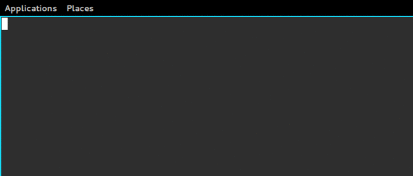

I live on the command line. Between vim, tmux, and xmonad, there isn't much I have to use the mouse for these days. Given my love for keyboard navigation, it only makes sense that I learn as many of the command line shortcuts available as possible. Here I detail some of the most helpful navigation tricks, and those I use on a daily basis.
First a brief word about these shortcut notations. If you see a command listed
as C-a, that is the shorthand representation of pressing Control and a
together. If you see M-b, that is the same as pressing Meta and b
together. Meta is typically Alt on modern systems.
I'm sure everyone knows about TAB completion, but just in case, I feel
compelled to mention it. When working in your shell, you can begin specifying a
file or directory and then use TAB to expand it as far as possible until a
conflict arises. For example, let us assume we have a directory containing the
files matthew.txt, jacob.txt and jacobsen.txt. If I wanted to open matthew.txt
in vim, I can start typing vim m and hit TAB after the m. Since this
character alone is enough to determine uniqueness, my shell will helpfully add
the atthew.txt.
However, if I wanted to open jacobsen.txt, I could type vim j<TAB>, which
would only complete until jacob. After that, the shell cannot possibly know
which file I meant, so it waits for more input. Typing a quick s and TAB;
will finish the job, resulting in vim jacobsen.txt. A lot of shells offer
context aware completion as well. In zsh for example, if I issue git checkout
and hit TAB, I am presented with a list of branches and tags that I can
checkout. Similarly, if I type kill I will get a list of running processes
and their associated PIDs.

There are also a lot of great shortcuts for navigation. For example, let us say
you have typed out the command sp aux | grep 'vim' | xargs kill -9. At this
point, you notice you have a typo at the very beginning. You could use your
arrow keys to navigate back to the beginning of the line, delete the two
offending characters, and then use the arrow keys to navigate to the end so you
can continue crafting the command. But this is so time consuming! Instead, we
can use 3 helpful shortcuts -- C-a, C-t, and C-e.
C-a will jump your cursor to the start of the line. C-t will transpose the
character under your cursor with the one to the left. In our case, there is no
character to the left, so it simply moves the cursor to the right and then
performs the swap. Now we can jump back to the end of the line with C-e. How
efficient is that?
A quick note about transpose. Vim users beware. This shifting behavior is
different than what you normally experience when issuing xp in command mode,
which swaps the character under the cursor to the right.
What about if the error you made is towards the beginning, but isn't at the
first character? Once you've navigated to the beginning of the command with
C-a, you can move forward a character at a time with C-f, or forward a word
at a time with M-f. In the same spirit, you can move backwards a character
with C-b, or back a word at a time with M-b.
One thing you will soon notice about these commands is that they tend to exist
in pairs. The control options tend to do the least amount of work, whereas meta
will work on a larger scale. So what about our C-t (transpose) option? Does
it have a M-t equivalent? Certainly! This will transpose words.
You might not always want to transpose characters or words. Instead, you may
need to delete some. C-d will delete one character a time, staring with the
character under your cursor. M-d will delete words at a time. Notice though,
that this deletes from the current cursor position to the end of the word. It
does not actually go back to the beginning of the word, and then delete from
there. If you need to delete a word from the current cursor position going
backward, you can use M-backspace.
There are quite a few times I'm crafting a command, and halfway through I
realize I need bail on the command and check something first. But if I C-c to
kill the current command, I'll have to retype it, and that's just no
good. Sure, there are ways around this. I could use the mouse to copy the
command and then paste it in later. I could open another tab or tmux window and
check whatever, but that just takes too long. Instead, you can use C-u to cut
the command from your cursor to the beginning of the line, placing that text in
your kill-ring, thereby freeing yourself do whatever you have to do. If you're
already at the beginning of the command, you can C-k to cut forward from your
cursor position. Once you're ready to resume that command, you can use C-y to
paste that command back and go on your merry way.
But it gets even better. Let's say you used the C-u / C-k option a few
times because it is so wicked helpful. But the last thing you cut isn't what
you want to restore. Use C-y to paste back your last cut, and then use M-y
to cycle through your kill-ring until you find the text you want to restore!
A lot of times in my workflow, I will edit a file, and then issue a git add
/path/to/file to stage it. I can just type vim /path/to/file, do my edits,
and then issue git add /path/to/file, but that means I have to type the same
file path twice, and I can't have that, even using TAB completion. The M-.
command saves the day. M-. will insert the last argument from the previous
command at the current cursor location. So now I just type vim /path/to/file,
do my edits, and then git add M-. and the file path is added for
me. Repeating M-. will cycle back through the last parameter for each of the
commands stored in your history.
This post is getting a little lengthy, but there are just a couple more
shortcuts that you simply must know about, and they all deal with your command
history. If you're anything like me, you tend to issue the same command
multiple times in a day, be it ssh-ing to some host, issuing git status or
what have you. Your shell maintains a history of the commands you have
executed, and you can move back through this history using the arrow keys on
the terminal. But those keys are SO far away from home row!
As you might have surmised, there is a more efficient solution. C-n and C-p
will allow you to navigate through your history going forward and backwards,
respectively.
If the command you are looking to recall was executed recently, C-n and C-p
are life savers. But if the command is more than a few lines back, they can
quickly become annoying. C-r allows you to issue searches against the command
history. Simply press C-r and then begin typing the command you would like to
recall. As you type more and more characters, the most recent command matching
your search will be displayed. Repeatedly tapping C-r at this point will find
the next most recent command matching the criteria, and so on until all
possible matches have been exhausted. Once you have found the command of
interest, C-j will execute it. If you'd like to select the command, but edit
it first, you can issue any of the navigation commands mentioned above to
select it and start editing. Or, you can type C-g to abort the search, and
your prompt will be restored with whatever text had originally been specified
prior to the search.
I hope you find these commands helpful, and they make working on the command line a little more enjoyable! And remember, there are plenty more shortcuts, so keep learning.